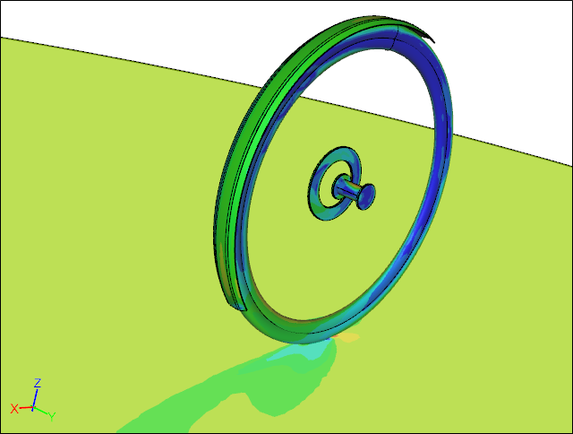
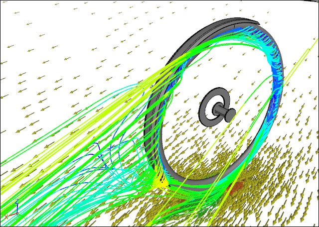

Bicycle Wheel and Fender Aerodynamics
In the bicycle world aerodynamics has taken on an ever increasingly important role. Cyclists are willing to go to great lengths and expense to realize performance enhancements through optimized aerodynamics in bicycle frames, wheels, and components. I thought it would be interesting to see where in the spectrum of aerodynamics performance disc rotors and fenders (mud guards) lie using Computational Fluid Dynamics (CFD) as our guide.
CFD Simulation of a Wheel with a Fender and Disc RotorVelocity contours at 25 degree yaw angle
Configurations
In an effort to keep this study simple I modeled a standalone front wheel based on a Stan's No Tubes Grail shallow profile aero rim and a 700x28c tire in Caedium. I added a hub for the standalone wheel study and omitted the spokes. Clearly in reality there would be an aerodynamic effect from the spokes, the frame, and the cyclist, but for a front wheel these are likely to be secondary considerations. I created a full model, rather than use symmetry for a half model, because I wanted to model the wheels at various yaw angles relative to the wind. Also the addition of the disc made the model non-symmetric.
Standalone WheelCFD simulation showing streamlines at 25 degree yaw angle
I added a simple idealized disc to model the wheel with a disc.
Wheel + Disc RotorCFD simulation showing streamlines at 25 degree yaw angle
I added a full length idealized front fender based on the SKS P45 Black Chromoplastic Longboard to model the wheel and disc with a fender.
Fender + Wheel + Disc RotorCFD simulation showing streamlines at 25 degree yaw angle
The protocol for testing bicycle wheels appears to have the wheel rotating to match a ground and wind speed of 30 mph, then varying the wheel direction to create yaw, but keeping the wind speed and wheel speed the same. This protocol is not consistent with reality, because to maintain a forward speed of 30 mph would require that the yawed wind speed be higher, i.e., higher than 30 mph. To make this study compatible with existing wind tunnel results I adopted the standard test protocol with its slight inconsistency.
Results
 Wheel Drag Force Comparison
Wheel Drag Force Comparison
The drag comparison for the three configurations shows that the standalone wheel and the wheel with the disc rotor have similar drag values across the entire yaw angle range. Also the drag of the wheel with the disc rotor is consistently slightly higher than the standalone wheel. Clearly shown is that adding a fender to the wheel with the disc rotor increases the drag significantly over just the wheel with a disc rotor.
Wheel Side (Yaw) Force Comparison
As you would expect the side force increases as the yaw angle of the wind increases for all wheel configurations. What is interesting is that the fender seems to reduce the side force for yaw angles less than 20 degrees in either direction compared to the other two wheel configurations.
Wheel Lift Force Comparison
The lift comparison shows that the standalone wheel and the wheel with the disc rotor produce similar small lift forces across the entire yaw range. For yaw angles less than 20 degrees the wheel with the disc rotor produces the slightly lower lift values than the standalone wheel. The addition of the fender produces a large increase in the lift force compared to the wheel with the disc rotor.
Conclusions
It appears that the addition of the disc rotor to a wheel has little effect on the overall aerodynamics of a standalone wheel. However, the addition of a fender makes a significant difference to a wheel, leading to increases in the drag and the lift forces. While the increase in drag will slow you down the increase in lift could impact the effectiveness of braking, i.e., trying to slow down. Finally the fender will likely make your bike more stable in mild cross (side) winds.
Of course the big upside to using fenders is staying relatively dry and clean in wet conditions, whether you value that above aerodynamic efficiency is up to you.
Notes
Each model was created in Caedium Professional. The CFD simulations were performed using the incompressible, steady-state RANS solver on the dual mesh (i.e., a polyhedral mesh where the cell count is equal to the number of nodes in the original mesh), with the k-omega SST turbulence model.
Feedback
Questions? Ideas? Problems?

Recent blog posts
- CFD Simulates Distant Past
- Background on the Caedium v6.0 Release
- Long-Necked Dinosaurs Succumb To CFD
- CFD Provides Insight Into Mystery Fossils
- Wind Turbine Design According to Insects
- Runners Discover Drafting
- Wind Tunnel and CFD Reveal Best Cycling Tuck
- Active Aerodynamics on the Lamborghini Huracán Performante
- Fluidic Logic
- Stonehenge Vortex Revealed as April Fools' Day Distortion Field
 Get our Blog feed
Get our Blog feed
Comments
Exactly the type of info I
Exactly the type of info I was hunting for - thank-you. Will the effect at averages around 18mph; more likely for on-road cycling for most of us than 30mph I'd suggest, be so great? I'm thinking not but equally would expect the difference not to be approximatable using dV squared as seems attractive. Have you any data for such lower speeds?
Thank you for the post, very
Thank you for the post, very interesting!
I wonder though if there's something missing here -- otherwise I doubt we'd see front fenders on state-of-the-art track racing motorcycles, for example. I'm specifically thinking about the spinning of the wheel: the top part of the tire is traveling - and pushing air forwards - at twice the speed of the rest of the bike.
I hypothesize that it would be of substantial benefit to have a front fender that's long enough to reach forward to about 30 degrees beyond the vertical, as this would shield the top part of the tire, and prevent it from pushing air forwards.
I know Jan Heine likes to claim that fenders are a wash aerodynamically, and I admit I am keen to believe him because I enjoy having my bum dry.
Thanks!